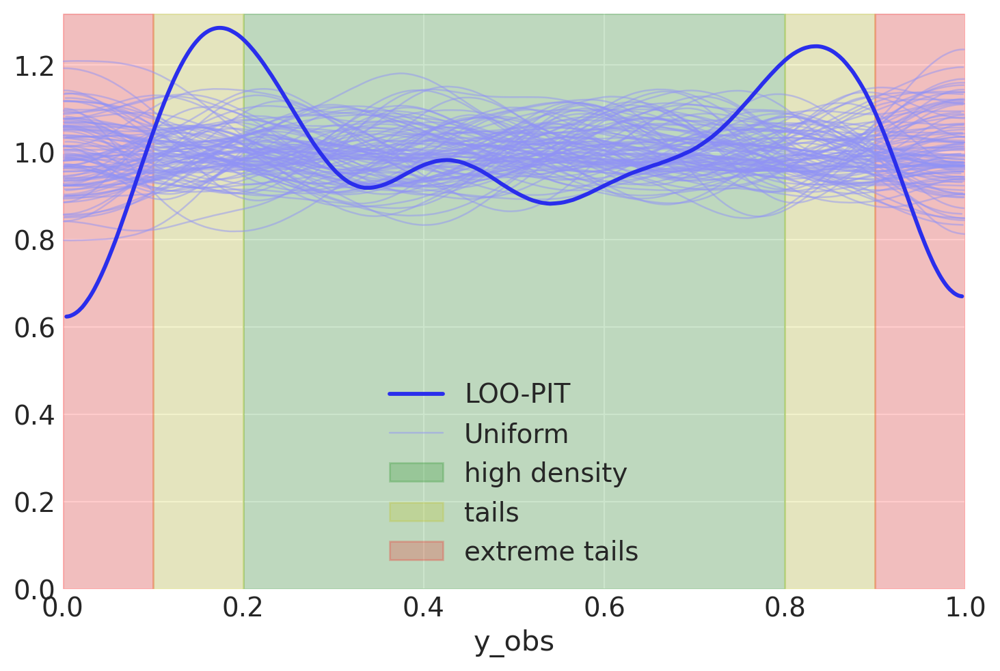

Interpreting LOO-PIT#
I got a question about interpreting plots you get from Arviz. This particular one was about LOO-PIT, which you can find here.
LOO-PIT is a useful concept to debug your model after inference is done. You can see if you have outliers and figure them out. By taking in account the feedback, you can later improve your model with better error model.
Let’s go into more details about why you ever need this plot, how to work with it, and which actions to take after you see it. A case-study.
Integral transform#
First, we need a model to demonstrate the pathologies that can be diagnosed with the LOO-PIT. I will use linear regression with robust likelihood to show all possible cases that can be fixed just by looking at the plot.
But wait, what is LOO-PIT you ask? Ok, let’s give some theory before we start.
LOO stands for Leave One Out validation. We usually want LOO to cross-validate our model. We train it on all but the one observation and then make predictions on the one that was the holdout. The same for every single observation.
PIT stands for Probability Integral Transformation. Briefly, it transforms any continuous distribution into a Uniform distribution.
While it is relatively clear what is LOO, it is not super clear, what is PIT. Let’s make some visualizations.
t = student_t.rvs(size=10000)
u = student_t.cdf(t)
We see that the cumulative transform does the job and transforms our StudentT random variables to the Uniform distribution. Similar ideas are used for LOO-PIT.
Compute (
#L1674) pointwise likelihood for all the observationsCalculate (
#L770) LOO likelihood approximation using pareto smoothed importance samplingApproximate (
#L1729) ECDF (Empirical CDF) values of the posterior predictive (for each sample)Approximate (
#L177) the ECDF function for visualization with KDE
If the likelihood is well specified, we’ll see a uniform distribution of ECDF values, means, uniform KDE. Just like on the plot above
Case study#
Generative model#
Our data will be generated with student T likelihood. We can adjust the degrees of freedom in the model to take care of the noise magnitude. This example will also be a very good way to visualize pathologies
def model(x, y, Likelihood: callable):
"""
Parameters
----------
x: np.ndarray
y: np.ndarray
Likelihood: callable
defines the likelihood of the observed variables
given y and y_hat as keywords. Here is an example
.. code-block:: python
Likelihood = lambda name, y, y_hat: pm.Normal(name, y_hat, observed=y)
"""
with pm.Model() as m:
x = pm.Data("x", x)
y = pm.Data("y", y)
β = pm.Normal("β")
intercept = pm.HalfCauchy("intercept", 1.)
y_hat = intercept + β * x
Likelihood("y_obs", y_hat=y_hat, y=y)
return m
Generating example data#
I do not think our data or model should be complicated. The whole point of the LOO-PIT is in defining likelihood, rarely model structure or flexibility. We can easily illustrate this with a univariate linear regression.
Bayesian detective#
Normal likelihood#
Most of the models start simple. The simple model in our case starts with a Normal likelihood.
NormalLik = lambda name, y, y_hat: pm.Normal(
name, y_hat,
sigma=pm.HalfNormal("sigma"), observed=y
)
with model(x, y, NormalLik) as normal_model:
normal_trace = pm.sample(idata_kwargs=dict(log_likelihood=True))
normal_trace.extend(pm.sample_posterior_predictive(normal_trace))
Auto-assigning NUTS sampler...
Initializing NUTS using jitter+adapt_diag...
Multiprocess sampling (4 chains in 4 jobs)
NUTS: [β, intercept, sigma]
Sampling 4 chains for 1_000 tune and 1_000 draw iterations (4_000 + 4_000 draws total) took 1 seconds.
Sampling: [y_obs]
Checks#
You know nothing about the underlying true model, so I’ll keep the intrigue about posterior vs true values to the end.
Let’s look at LOO-PIT
Disclaimer. I write these lines as I would first see it, without conducting further analysis. This gives you a good thought process happening in my head.
Oh, you might think! Something is going wrong. What do we read from the plot? Let’s operate with facts: * We have to recall that what we plot here is CDF of the posterior applied to the observed data * Since we specified normal distribution in likelihood our CDF has similar properties (no outliers) * Looks like our data is mostly concentrated inside the high-density region and not represented on the tails
I know how I generated my data and, actually, expected a bit different picture. But let’s see how it goes
Let’s check how does the posterior predictive looks like:
Oh, yeah! We get some more intuition from this picture. Data has huge tails, but narrow high-density regions. But for a more complicated distribution, could we have known that we have outliers without the picture? Yes
az.loo(normal_trace, pointwise=True)
Computed from 4000 posterior samples and 1000 observations log-likelihood matrix.
Estimate SE
elpd_loo -4112.17 343.11
p_loo 91.13 -
There has been a warning during the calculation. Please check the results.
------
Pareto k diagnostic values:
Count Pct.
(-Inf, 0.5] (good) 998 99.8%
(0.5, 0.7] (ok) 0 0.0%
(0.7, 1] (bad) 0 0.0%
(1, Inf) (very bad) 2 0.2%
With Pareto k diagnostic values we see that we have two outliers. I would not say that two is good. Our example says that we have a very ill-defined model. But only by combining the LOO-PIT check and Pareto k values we can conclude that with symptoms we observe the disease are outliers.
But only combining LOO-PIT check and Pareto k values we can conclude that with symptoms we observe the disease are outliers.
Could we do more plots? Yes
Would they add more value? Probably
How much? Not much
Robust likelihood#
Let’s go to the second specification of our model. This one will be robust, amazingly robust, we’ll try to get as long tails as possible.
OverdispersedPrior = lambda name, y, y_hat: pm.Cauchy(
name, y_hat, pm.HalfNormal("sigma", 1), observed=y
)
And then use it in the model
with model(x, y, OverdispersedPrior) as overdispersed_model:
overdispersed_trace = pm.sample(idata_kwargs=dict(log_likelihood=True))
overdispersed_trace.extend(pm.sample_posterior_predictive(overdispersed_trace))
Auto-assigning NUTS sampler...
Initializing NUTS using jitter+adapt_diag...
Multiprocess sampling (4 chains in 4 jobs)
NUTS: [β, intercept, sigma]
Sampling 4 chains for 1_000 tune and 1_000 draw iterations (4_000 + 4_000 draws total) took 1 seconds.
Sampling: [y_obs]
Checks#
Let’s check LOO-PIT again
az.plot_loo_pit(overdispersed_trace, "y_obs");
Ok, we now see two weird bumps in the LOO-PIT plot. What can we say about this? * Remember, these are CDF values of data * Yeah, CDF says that in high-density region we have less observations than on tails * Let me clarify a tiny bit

Data seems to be clearly concentrated a bit far from where it should be. We probably underestimated variance - we do not see enough data in the small green region. Let’s check the PPC plot to visualize the intuition further.
az.plot_ppc(overdispersed_trace, num_pp_samples=100);
Oh, what a bad model would you say, outliers are insane in the posterior predictive, we should have less of them. But wait, what about variance, not outliers
az.plot_ppc(overdispersed_trace, num_pp_samples=100)
plt.xlim(-200, 200);
Yes, the picture is now more accurate. In our passion to add outliers into the model, we missed the fact that we might actually add way too many of them. Variance also seems to be high, but that seems not a priority this time.
Take-outs: reduce outliers, variance is not a priority
Student T likelihood#
Did you know?
\(\nu\) parameter in StudentT controls “how heavy are the tails”
\(\nu \to 0\) means crazy many outliers
\(\nu = 1\) is Cauchy (See the likelihood above, gotcha)
\(\nu \to \infty\) gives you normal distribution
With StudentT distribution we can control both variance and amount of over-dispersion. How do we construct priors for parameters? * \(\nu\) - we just checked Cauchy distribution and saw that it generates tons of outliers, we need less, for sure. But not too much. We need zero avoiding prior with relatively large tails * \(\sigma\) - no specific values, we can just keep the old prior
My take on \(\nu\) parameter. I informally think of it if I would expect \(1/\nu\) rate of outliers in my data. That is very aligned with \(\nu \to \infty\) converging to normal distribution. Though, this is just intuition, not mathematical interpretation. Use it as long as it applies to your case.
StudentTPrior = lambda name, y, y_hat: pm.StudentT(
name, pm.Gamma("nu", mu=5, sigma=2),
mu=y_hat,
sigma=pm.HalfNormal("sigma", 1),
observed=y
)
This prior should work better
with model(x, y, StudentTPrior) as student_model:
student_trace = pm.sample(idata_kwargs=dict(log_likelihood=True))
student_trace.extend(pm.sample_posterior_predictive(student_trace))
Auto-assigning NUTS sampler...
Initializing NUTS using jitter+adapt_diag...
Multiprocess sampling (4 chains in 4 jobs)
NUTS: [β, intercept, nu, sigma]
Sampling 4 chains for 1_000 tune and 1_000 draw iterations (4_000 + 4_000 draws total) took 2 seconds.
Sampling: [y_obs]
az.plot_loo_pit(student_trace, "y_obs");
What one looks much better. Let’s compare our models…
Model Comparison#
summary = az.compare({
"normal (underdispersed)": normal_trace,
"cauchy (overdispersed)": overdispersed_trace,
"studentT (seems nice)": student_trace,
})
We see a very interesting picture. My thinking was in favor to rank the normal model higher than the Cauchy one. But things are, actually, more complicated than initially perceived. Normal distribution did not take into account outliers and suffered hard. Cauchy was more forgiving to outliers, but as we’ve seen, more forgiving than necessary. Does it have consequences? Probably, let’s see
Cards revealed#
This all is not necessary at all unless we want to know something about our model and the system it describes. Our variables of interest are \(\beta\) and the intercept:
We can also compare variance (scale parameters) that our models estimate
Hah, most have nothing in common with the true sigma. Only StudentT managed to recover the true sigma.
Posterior for \(\nu\) is quite uncertain. Low values generate too much noise, so sigma is less important. The uncertainty in \(\nu\) creates a lot of troubles in practice, you need to be really certain in your priors to make use of that. Let’s have a look at the posterior predictive again
az.plot_ppc(student_trace, num_pp_samples=100);
We need to zoom in to see the difference
But could I?..#
Maybe we could do any better when we know \(\nu\)?
StudentTInformedPrior = lambda name, y, y_hat: pm.StudentT(
name, nu=true_nu,
mu=y_hat,
sigma=pm.HalfNormal("sigma", 1),
observed=y
)
with model(x, y, StudentTInformedPrior) as student_informed_model:
student_informed_trace = pm.sample(idata_kwargs=dict(log_likelihood=True))
student_informed_trace.extend(pm.sample_posterior_predictive(student_informed_trace))
Auto-assigning NUTS sampler...
Initializing NUTS using jitter+adapt_diag...
Multiprocess sampling (4 chains in 4 jobs)
NUTS: [β, intercept, sigma]
Sampling 4 chains for 1_000 tune and 1_000 draw iterations (4_000 + 4_000 draws total) took 2 seconds.
Sampling: [y_obs]
summary = az.compare({
"normal (underdispersed)": normal_trace,
"cauchy (overdispersed)": overdispersed_trace,
"studentT (seems nice)": student_trace,
"studentT (informed)": student_informed_trace,
})
az.plot_compare(summary);
ax = az.plot_forest(
[student_trace, student_informed_trace],
model_names=["StudentT", "StudentT informed"],
var_names=["sigma"], combined=True)
plt.axvline(true_sigma, color="black", linestyle="--");
Noise parameters are always tricky, there is a trade-off where there something we can infer and what is left behind the scenes. Do not get trapped in estimating every nuance parameter you ever introduce into the model. There will definitely be something you’ve left behind, put not informed enough priors and so on. > Actually this is exactly the case with sigma in this example. Half normal is not zero avoiding and the true model has \(\sigma=3\) that is away from zero.
Conclusions#
LOO-PIT is a great plot that helps you to go look what is going on with the model
check tails and outliers
check variance
LOO-PIT combined with PPC plot and LOO-Pointwise can guide to a better likelihood
Sometimes the model gives you a good answer, but still can be improved with more informed priors, more domain knowledge. Nuance parameters are hard, and you never know the right answer, that’s fine
If you have new ideas after reading the notebook, want to discuss it in more details or want to work with me, you can always reach me out.